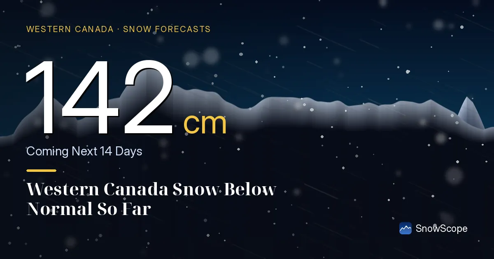
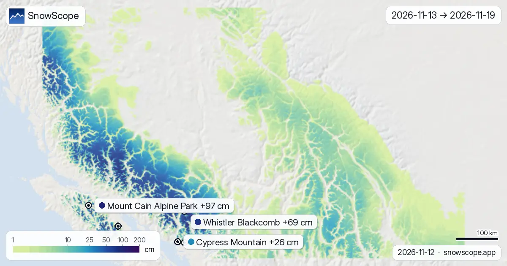
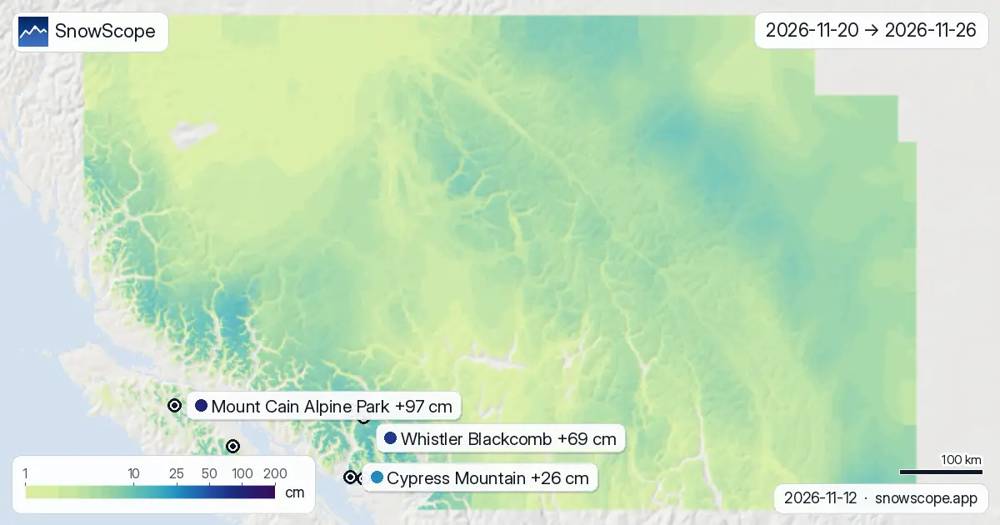

Western Canada Snow Below Normal So Far: 142 cm Coming Next 14 Days
The mountains of Western Canada are catching snow below what we see in past winters at this same date. The good news: two independent models agree that 142 cm will arrive over the next two weeks, with the strongest push during the first seven days.
See the live snow forecast for Mount Cain Alpine Park in the SnowScope appSnow depth, powder alerts and the 3D map, free.
Catching Up to Normal
Right now, Mount Cain Alpine Park holds 58 cm on the upper slopes, but that sits at just 42 percent of what this date usually brings. The rest of the region is tracking similarly. Only 36 out of 57 resorts show measurable snow depth, and snow cover shrank after the recent dry days.
The models tell us why: a wet pattern locked most of the region dry until this week. That changes starting Friday.
| Resort | Snow depth | New snow, 72 h | Coming, next days | Top |
|---|---|---|---|---|
| Mount Cain Alpine Park | 58 cm | 15 cm | 37 cm | 1,616 m |
| Whistler Blackcomb | 67 cm | 38 cm | 78 cm | 2,259 m |
| Mount Washington Alpine Resort | 0 cm | 4 cm | 6 cm | 1,569 m |
| Ski Callaghan | 16 cm | 3 cm | 1 cm | 998 m |
| Cypress Mountain | 0 cm | 0 cm | 0 cm | 1,426 m |
| Mt Seymour | 0 cm | 0 cm | 0 cm | 1,255 m |

First Week Wins
Friday 13 November the turnaround begins. Mount Cain gets 23 cm that day, but Sunday 15 November is the event: 47 cm at Mount Cain, 37 cm at Mount Washington, 33 cm at Whistler Blackcomb. This single day does most of the work for the week.
By the 19th, week one delivers 88 cm at Mount Cain. Week two adds just 9 cm. That is where the season makes its recovery.

Height and Week 2
Across all elevations, the pattern is striking. Mid-mountains around 1500 to 2000 metres will see 9 cm on the median, the same as the 2000 to 2500 metre band and the 2500 to 3000 metre zone. The highest slopes, above 3000 metres, edge out 10 cm. This narrow range tells you the system will cover all altitudes.
Week 2 (20-26 November) will be much quieter: only 9 cm is forecast for the whole week, mostly light flurries. The main energy exits by mid-week. Ski Callaghan stays drier than the interior, just 43 cm total. Coast resorts like Cypress Mountain and Mt Seymour see only 26 and 24 cm respectively over the full 14 days.

When and Where
Monday 16 November is the best day for the coastal ranges. Mt Seymour gets 14 cm that day, Cypress Mountain 13 cm. These resorts miss the big Sunday push because of the system's track.
For the interior—Mount Cain, Whistler, Mount Washington—Sunday 15 November marks the signal. That day, 47, 33 and 37 cm respectively make the difference between patchy early season and skiable terrain. After that, Wednesday to Friday (18-20 November) are dry. Light snow returns the following Sunday (23 November), but nothing that shifts the story.
What the Models Tell Us
Both the ECMWF and NOAA models agree on the main event: a low-pressure system bringing snow from Friday through Monday. The models' range on total snowfall shows they align on the size of this system.
Where they differ is in day-to-day details and which valleys catch the heaviest snow. For Mount Cain, the range is 64 to 131 cm over 14 days; the middle value is 97 cm. For Whistler, it is 53 to 84 cm; the middle is 69 cm. This spread tells us the exact timing and intensity will shift a little depending on the model run, but the overall picture is solid.
Tips for skiers
- Plan your timing around 15-16 November: interior resorts gain 30+ cm those two days, but drier conditions return by 20 November. The window for fresh powder closes fast.
- Head inland if you want the most snow: Mount Cain and Whistler Blackcomb see 97 and 69 cm respectively over 14 days, while coastal resorts like Cypress and Mt Seymour get under 30 cm total. Interior terrain works best.
- Early season rocks are still a risk: on the lower slopes of Mount Washington and other coastal ranges, current depth sits near zero. This system helps, but expect thin coverage and exposed terrain until snow builds deeper.
- Watch for avalanche risk on new terrain Sunday: a system this strong will deposit fast, especially on steep slopes. Consult the official avalanche bulletin before heading off-piste.
- Upper slopes hold the best base right now: Mount Cain's mid-mountain terrain at 1500 metres has 58 cm, while the base barely registers. Stick to elevation above 1500 metres during this early phase.
About these numbers
Resort snow depths are the deepest snow on the resort's upper slopes from the SnowScope snow model (about 1 km, run of 12 November); they are estimates for an area, not a measurement at one point. Station values are measurements on the date shown. Forecasts can change. Always read the official avalanche bulletin before going off-piste.
Official avalanche bulletins: Avalanche Canada
Cite this report
For research, teaching or the press: the numbers and charts are free to reuse under CC BY 4.0 with this citation.
SnowScope (2026), Western Canada Snow Below Normal So Far: 142 cm Coming Next 14 Days, https://snowscope.app/blog/en/2026/11/western-canada-2-week-snow-forecast-maps-12-november-2026.html, accessed 2026-11-12
SnowScope (Atlas Labs). (2026, November 12). Western Canada Snow Below Normal So Far: 142 cm Coming Next 14 Days. SnowScope snow reports. https://snowscope.app/blog/en/2026/11/western-canada-2-week-snow-forecast-maps-12-november-2026.html
BibTeX
@misc{snowscope2026westerncanada2weeksnowfo,
author = {{SnowScope (Atlas Labs)}},
title = {Western Canada Snow Below Normal So Far: 142 cm Coming Next 14 Days},
year = {2026},
month = nov,
howpublished = {\url{https://snowscope.app/blog/en/2026/11/western-canada-2-week-snow-forecast-maps-12-november-2026.html}},
note = {Published 2026-11-12 18:27 UTC; accessed 2026-11-12}
}· CC BY 4.0 · Methods, data and tools →
Mount Cain Alpine Park: snow and temperature by height, this winter vs last (tools) →
Follow Mount Cain Alpine Park
Free: a message when fresh snow is coming, and the forecast every morning.
More snow reports

Ski Callaghan leads Western Canada forecast with 48 cm new snow through 7 November, mostly on 6th, with higher elevations capturing deeper accumulation.

Whistler Blackcomb got 75 cm of new snow at the top in a week, then a warm storm with 124 mm of water. A simple guide to base, fresh snow, rain and crust.

Whistler Blackcomb for every level, with our snow history: about 370 cm at the usual peak at mid-mountain over 46 past winters, March and April the deepest months.